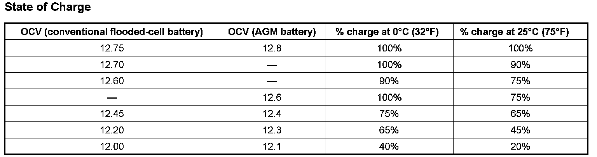

Electrical - Battery Charging Tips/Recommendations
INFORMATIONBulletin No.: 02-06-03-009C
Date: April 17, 2008
Subject:
Battery Charging Tips (Includes Information References for HP2 Hybrid Truck [PHT] 42-volt System)
Models:
1990-2009 GM Passenger Cars and Light Duty Trucks (Including Saturn)
2003-2009 HUMMER H2
2006-2009 HUMMER H3
1990-2009 Isuzu Light Duty Trucks
2005-2009 Saab 9-7X
Supercede:
This bulletin is being revised to add model years. Please discard Corporate Bulletin Number 02-06-03-009B (Section 06 - Engine/Propulsion System).
When you test a battery with a Midtronics Conductance Tester J 42000 or J 42000-EU (or equivalent for Saturn Retailers) there are five typical outcomes:
^ Good battery
^ Good - recharge
^ Charge & retest
^ Replace battery
^ Bad cell - replace
You'll notice that battery charging is called for in two of these outcomes. This bulletin will address charging and chargers in more detail.
What's Involved in Charging
Briefly, charging involves applying sufficient voltage to the battery to cause current to flow through the battery. Charging causes a chemical change in both the batteries plates and the electrolyte. If the battery is simply discharged, but otherwise good, and you apply a suitable current for enough time, the battery will eventually become as fully charged as is chemically possible. However, continued application of current can lead to overheating, loss of electrolyte and shortened battery life.
The charging process requires two things: time and current. If you multiply the charging rate in amperes by the number of hours, the result will be the ampere-hours of charge you've applied to the battery. To bring a battery to full charge will require roughly the same number of ampere-hours at a low charge rate as it does at a high rate. Put another way, a higher rate will take less time.
Because customers desire to have their vehicles returned quickly, it's often desirable to get the charging job done quickly by using a high charge rate. Before doing this, though, you need to know a little more about the process.
State of Charge

It is not possible to measure a battery's state of charge in ampere-hours, so another method must be used. Open circuit voltage (OCV), measured across the battery's terminals, relates to the battery's state of charge. The voltmeter must be capable of reading to the nearest 0.01 volt.
If the battery has NOT been charged or used (the engine started or the vehicle driven) in the last 12 hours, a reading may be taken.
If the battery has been discharged and recharged or used within the last 12 hours, connect a carbon pile and load the battery at 300 amperes for 15 seconds. Remove the load. Wait 15 seconds and then take the reading.
Important:
The OCV reading is accurate +/- 10%.
A battery with a state of charge of 65% or greater ("green eye" showing) is marginally charged enough to be returned to service. However, if the vehicle is or will be used in slow traffic or short drive times, or in very cold or very hot conditions, the battery should be at least 90% of full charge before returning to service (the customer).
Battery Charging and the Reality of the Service Lane
A customer with a "bad" / "discharged" battery typically expects something to be done about it immediately. The customer may not understand that the battery may be "good" but simply discharged. Customers may want to get back on the road quickly and demand a new battery under warranty.
There are two things wrong with this approach. One, if the battery is otherwise serviceable, it may only need a recharge to return it to health. Second, unless the cause of the battery becoming discharged is resolved, neither a new battery nor recharging the original will permanently solve the problem.
Your job, then is to recharge the battery quickly and safely determine and repair, if necessary, the cause of the battery becoming discharged.
Automatic Battery Chargers
Recent advancements in battery charging technology now combine diagnostics and charging control systems that monitor and automatically regulate the charging process.
These controls maximize the chargers output based on the battery status, while protecting the battery from overcharge. This shortens the overall time by making the most effective use of the chargers output capability. This means you can confidently use chargers with the highest output ratings, so long as the charger makes the necessary adjustments as the battery approaches full charge.
Automatic battery chargers such as the Midtronics GR1, Associated Intell/Matic Pro or the Cristie PDQ can return a good, but discharged, battery (as indicated by your J 42000 tester) to at least 85% state of charge in 20 to 40 minutes. For more information on these chargers, call GM Dealer Equipment.
Manual Battery Chargers
Non-automatic battery chargers do not offer the self-limiting features of the latest equipment. It is the operators responsibility to control the charging process. With careful monitoring you can use a manual charger to successfully charge maintenance-free batteries.
Monitor both charging current and voltage every 30 minutes. Because voltage is not held constant, it will rise as the battery becomes charged.
When voltage reaches 16 volts, you must reduce the charging current to 5 amperes. When the voltage reaches 16 volts again, at the 5 amp current, the battery is fully charged.
Conditions That Affect Charging
A completely discharged battery will take more than twice as long as a half-charged battery to bring the battery to a usable state of charge. The electrolyte in a discharged battery is largely water, which is a poor conductor. The battery may accept such a small amount of current at first that it appears not to take charge.
Chemical reactions in a battery are slower at low temperatures. This means a very cold battery will take longer to charge than one at room temperature.
And, of course, a larger battery will take longer to charge than a small one.
Special Conditions for AGM Batteries
The Absorbent Glass Mat (AGM) battery uses absorbent glass mats to hold a small amount of electrolyte in contact with the plates. The battery uses a gas recombinant technology, which means the gases produced at the plates are recombined to form water before they escape. This battery design offers high power for lower weight and is more resistant to high temperatures, vibration and cycling.
The AGM battery may be charged using the automatic battery charger. Laboratory tests have shown that AGM batteries respond very well to such chargers. In fact, even the chargers with the highest output ratings may be confidently used, as long as the charger automatically adjusts the charging current as the battery nears full charge. When the charger operation indicates that the battery is fully charged (refer to the charger manufacturers instructions), remove the battery from charge.
However, when using a conventional charger, limit the rate to 10 amperes or less. Do not allow the battery to charge at 3 amperes or more for longer than 10 hours, or 10 amperes for longer than 5 hours. When these limits are reached, allow the battery to stand overnight, then resume charging, if further charging is required.
Check the voltage every 30 minutes and remove the battery from charge when the voltage reaches 15 volts at 3-10 amperes. The state of charge is now at 90 to 95%.
2004-2007 PHT Trucks Only: The AGM application for the PHT pickup (RPO HP2) involves three such batteries in a 42 volt system, at a 50% charge. Refer to Battery Inspection/Test (HP2), Battery Pack Service Charge-HP2 and Battery Charging (HP2) procedures in SI for specific information on hybrid battery systems.

Disclaimer